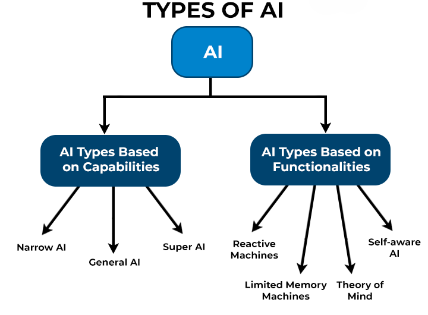

Chapter 5: Types of Artificial Intelligence
In this chapter, you will explore the different types of AI in greater depth.

In this chapter, you will explore the different types of AI in greater depth.

Narrow AI is the most prevalent kind of AI today. From applications in mobile phones to the Internet to big data analytics, narrow AI is taking the world by storm.
The name stems from the fact that this kind of artificial intelligence systems are explicitly created for a single task. Owing to this narrow approach and inability to perform tasks other than the ones that are specified to them, they are also called as ‘weak’ AI. This makes their intelligence highly-focused on one task or set of tasks, allowing for further optimization and tweaking.
Narrow AI is designed for specific tasks and cannot perform tasks other than the ones specified to it. This narrow focus is mainly due to the following factors:
Owing to its high efficiency, speed, and consumption rate over humans, narrow artificial intelligence is one of the go-to solutions for corporates. For a wide variety of low-level tasks, narrow AI can employ smart automation and integration to provide efficiency while maintaining accuracy.
This makes it a favored choice for tasks that involve million-scale datasets, known as big data. With personal data collection being prevalent, companies have a large amount of big data at their disposal that can be used for training AI and deriving insights from it.
Today, narrow AI is also used in various Internet applications that we use on a daily basis. Following are a few examples of narrow AI:
While narrow AI refers to where artificial intelligence has reached today, general AI refers to where it will be in the future. Also known as artificial general intelligence (AGI) and strong AI, general artificial intelligence is a type of AI that can think and function just as humans do.
This includes perceptual tasks, such as vision and language processing, along with cognitive tasks, such as processing, contextual understanding, thinking, and a more generalized approach to thinking as a whole.
While narrow AI is created as a means to execute a specific task, AGI can be broad and adaptable. The learning part of an adaptive general intelligence also has to be unsupervised, as opposed to the supervised and labeled learning that narrow AI is put through today.
AGI is still a far off reality, as the tools required to build it are not available today. Many argue that neural networks are a dependable way to create the forerunners of what can be called artificial general intelligence, but the reality of the situation is that human intelligence is still a black box.
While we as humans are beginning to decode the inner workings of our minds and brains, we are still a long way from figuring out what ‘intelligence’ means. In addition to this obstacle, the need to define ‘consciousness’ is integral to creating a general AI. This is due to the fact that an AGI needs to be ‘conscious’ and not just an algorithm or machine.
There are various pitfalls associated with general artificial intelligence. Some of them include:
Learn more: Embracing Technology Using AI
Artificial super intelligence (ASI) is a term used to denote an AI that exceeds human cognition by a great extent in every possible way. This is one of the most far-off theories of artificial intelligence but is generally considered to be the eventual endgame of creating an AI.
While artificial super intelligence is still a theory at this point in time, a lot of scenarios involving it have already been envisioned. A common consensus among those in the field is that ASI will come from the exponential growth of AI algorithms, also known as ‘Intelligence Explosion’.
Intelligence explosion is a concept required for the creation of artificial super intelligence. As the name suggests, it is an explosion of intelligence from human-level, general artificial intelligence to an unthinkable level. This occurs through recursive self-improvement.
Self-improvement in AI comes in the form of learning from user input in neural networks. Recursive self-improvement, on the other hand, is the capacity of an AI system to learn from itself, at rapidly increasing levels of increasing intelligence.
To illustrate this, take the example of an AGI functioning at the level of average human intelligence. It will learn from itself, using the cognitive capabilities of an average human, to reach genius-level intelligence. However, this begins compounding, and any future learning made by the AI will be conducted at a genius-level cognitive functioning.
This accelerates at a fast pace, creating an intelligence that is smarter than itself at every step. This continues to build up quickly, until the point where intelligence explodes, and a super intelligence is born. Containing or creating a super intelligence is something that we as a human race are far from, making it an entry for sci-fi novels. For now.
In psychology, the theory of mind is the ability to connect what one is feeling to the reality that they are feeling it. In other words, it is the ability of humans to attribute their mental state to themselves while recognizing that they are different from others.
It is an important part of social cognition and is integral for a human being to function in society. Replicating the theory of mind and a construct such as the ‘mind’ may be what we are missing to create a true general artificial intelligence.
In a way, the theory of mind is a way for individuals to create a simulation of the consequences of their actions. This can be replicated in AI by creating an internal simulation which contains a model of the AI itself, along with a model of the world.
This brings a perspective of ‘common sense’ to the model and can represent solving one of the primary challenges of creating a general AI. Experts believe that this is one of the biggest steps that will bridge the gap between the neural networks of today to create a stronger, more adaptive AI.